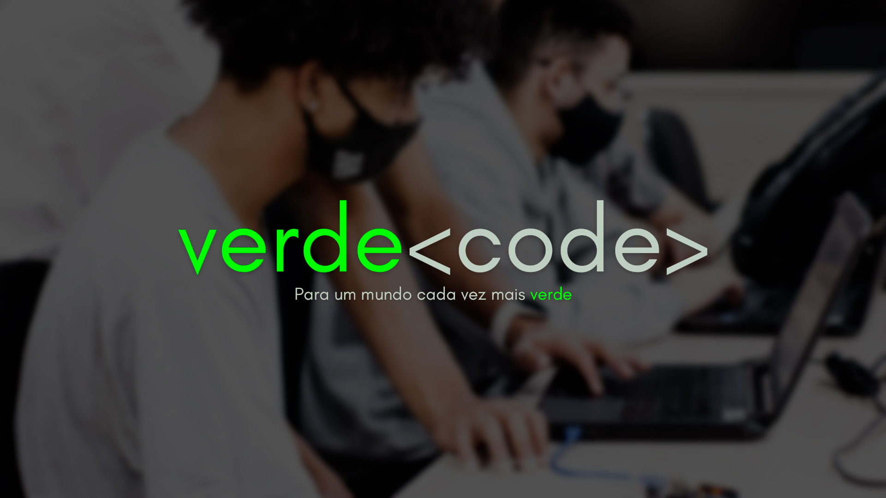

Somos uma empresa de Tecnologia que visa revolucionar o mercado
do Agronegócio
Surgiram novas necessidades aos produtores agricolas.
Umas dessas necessidades relaciona se com as
exigências que os maiores clientes começaram a fazer no
sentido de documentar as informações e ter uma análise
do que foi realizado. Por este motivo o Agricobook
nasceu.